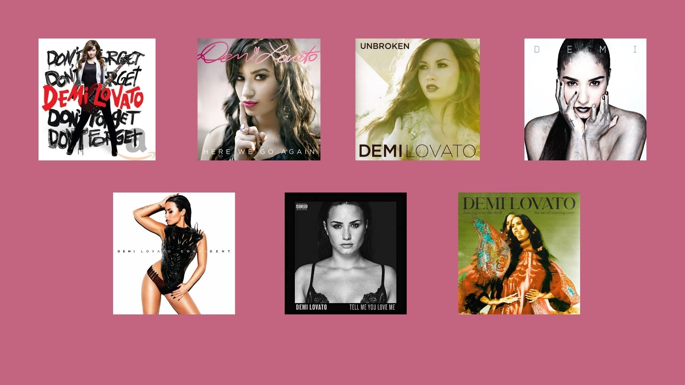

Demi Lovato- Algumas Curiosidades
Demetria Devonne "Demi" Lovato é uma cantora, compositora e atriz norte-americana. Após participar do programa de televisão infantil Barney & Friends, ela estrelou a minissérie do Disney Channel As the Bell Rings. Wikipédia
Nascimento: 20 de agosto de 1992 (idade 33 anos), Albuquerque, Novo México, EUA
Cônjuge: Jutes (desde 2025)
Gênero Musical: Rock
Parceiros de composição: Jutes, Joe Jonas, Jonas Brothers, ETC...
Discografia
- Don't Forget (2008)
- Here We Go Again (2009)
- Unbroken (2011)
- Demi (2013)
- Confident (2015)
- Tell Me You Love Me (2017)
- Dancing with the Devil...The Art of Starting Over (2021)
- Holy Fvck (2022)
- It’s Not That Deep (2025)

Turnês
Como Headliner:
- 2008-Demi Live! Warm Up Tour
- 2009-Summer Tour
- 2010-outh America Tour
- 2011-2011 A Special Night with Demi Lovato
- 2014-The Neon Lights Tour
- 2014-2015 Demi World Tour
- 2016-Future Now Tour
- 2018-Tell Me You Love Me World Tour
- 2022-Holy Fvck Tour
- 2026-It's Not That Deep Tour
Filmografia
Cinema:
- 2012-Demi Lovato: Stay Strong Ela mesma
- 2017 Smurfs: The Lost Village Smurfette
- Demi Lovato: Simply Complicated Ela mesma
- 2018-Charming Lenore / Lenny
- 2020-Eurovision Song Contest: The Story of Fire Saga Katiana Lindsdóttir
- 2021-Demi Lovato: Dancing with the Devil -Ela mesma-Estreia como diretora
- 2024-Child Star- Ela mesma
- 2025-Tow Nova
Televisão:
- 2002–2004 Barney & Friends Angela 10 episódios
- 2006-Prison Break Danielle Curtin Episódio: "First Down"
- 2007–2008 As the Bell Rings Charlotte Adams 15 episódios
- 2007-Just Jordan Nicole Episódio: "Slippery When Wet"
- 2008-Camp Rock Mitchie Torres Filme de TV
- 2009-Princess Protection Program Rosalinda / Rosie Filme de TV
- 2009–2011 Sonny With a Chance Sonny Munroe 47 episódios
- 2010-Grey's Anatomy Hayley May Episódio: "Shiny Happy People" Camp Rock 2: The Final Jam Mitchie Torres Filme de TV
- 2011-Quando Toca o Sino Ela mesma Episódio: "Encontro com Demi Lovato"
- 2012-2013 The X Factor Jurada 54 episódios
- 2013-2014 Glee Dani 4 episódios
- 2014-Matador Convidada da festa Episódio: "Quid Go Pro"
- 2015-From Dusk Till Dawn: The Series Maia 2 episódios
- 2020-Will & Grace Jenny 4 episódios
- 2021-Unidentified with Demi Lovato Ela mesma 4 episódios
- 2023-Dave Ela mesma "Met Gala"